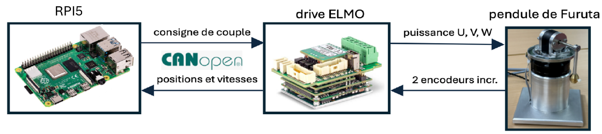
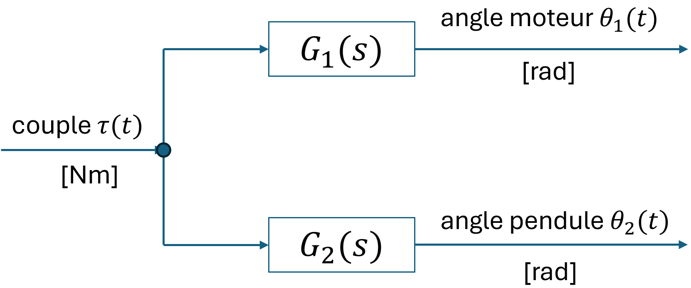
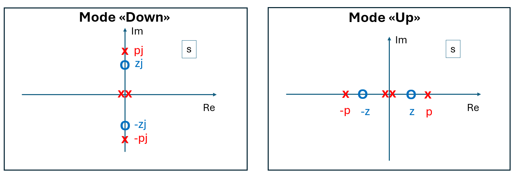
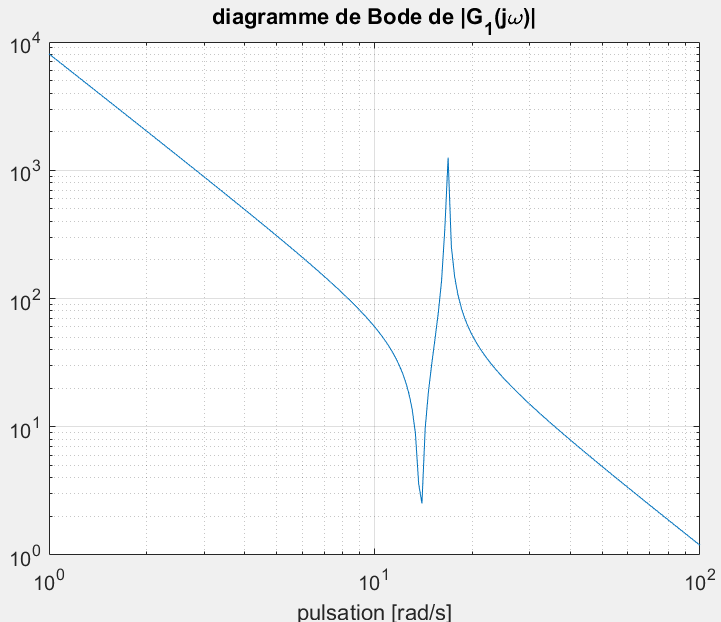

Régulation
Architecture de régulation

-
Le drive ELMO s'occupe de la commutation du moteur BLDC et de la régulation de courant, donc la régulation de couple. De surcroit, le drive ELMO interface les 2 capteurs incrémentaux, et calcule les vitesses de rotation. Le calcul des vitesses côté drive est moins bruitée, car le jitter de la période d'échantillonnage est très faible.
-
La RPI5 communique avec le drive via CANopen, et lui communique la consigne de couple via des trames PDO. Le drive transmet au RPI5 les positions et vitesses des deux encodeurs incrémentaux.
Logiciel de régulation
La régulation du pendule s'effectue sur la RPI5 dans l'application furuta_core, écrite en C++ (dépôt pendule-furuta-core). Une première version en Python avait montré ses limites (jitter de la période d'échantillonnage élevé, coups d'horloge ratés) ; le passage en C++, combiné à une priorité temps réel FIFO et à un cœur CPU dédié (chrt -f 90 taskset -c 3), permet un comportement proche du temps réel dur.
L'horloge de la régulation provient du bus CANopen : la RPI5, master CANopen, émet un message SYNC toutes les 2 ms. Le drive ELMO publie ses mesures (positions et vitesses des deux codeurs) par PDO synchrones, et le core calcule à chaque SYNC le couple à appliquer, soit à une cadence de 500 Hz — très élevée par rapport à la dynamique de la maquette. La consigne de couple est renvoyée au drive par PDO.
Les étudiants n'interviennent pas dans le code C++ : ils pilotent le pendule depuis Python (notebooks Jupyter) via la bibliothèque pendule-furuta-interface, qui permet de changer de mode et de déclencher des acquisitions de mesures au format HDF5 (voir la page Application).
Modes de fonctionnement
Le core implémente six modes, sélectionnables depuis l'interface Python ou l'écran de la maquette :
| Mode | Description |
|---|---|
IDLE |
Étage de puissance coupé, moteur libre. |
REGULATION_DOWN |
Retour d'état LQR autour de la position d'équilibre basse. |
REGULATION_UP |
Retour d'état LQR autour de la position d'équilibre haute (pendule inversé). |
SWING_UP |
Séquence de lancement puis loi de commande en énergie pour amener le pendule en haut. |
IDENTIFICATION |
Régulation LQR en haut avec superposition d'un signal d'excitation, mesures enregistrées en HDF5. |
TORQUE_CONTROL |
Couple piloté directement depuis l'interface (aucune régulation), avec deadman et coupures de sécurité. |
Dans les modes de régulation, la loi de commande est un retour d'état complet
avec un jeu de gains LQR propre à chaque mode et une saturation du couple par mode (0.4 à 0.6 Nm). Le zéro de l'angle du bras \(\theta_1\) est recalé à chaque changement de mode. Les gains de chaque mode sont réglables à chaud depuis l'interface Python (set_gains / get_gains), sans recompilation ni redémarrage du core — voir la page Application.
Le mode TORQUE_CONTROL court-circuite la régulation : l'interface impose directement la consigne de couple (set_torque), à rafraîchir régulièrement. Un deadman (~50 ms) ramène le couple à zéro si la consigne n'est plus rafraîchie, la consigne est saturée (±0.32 Nm) et une survitesse du bras ou du pendule provoque un retour automatique en IDLE. Ce mode est utile pour tester des lois de commande écrites côté Python ou pour des essais en boucle ouverte.
Le mode SWING_UP enchaîne les phases suivantes :
- stabilisation du pendule en bas par le régulateur
DOWN(1.5 s), puis courte pause moteur libre ; - impulsion de couple positive puis négative pour lancer l'oscillation, d'amplitude atténuée selon la vitesse du pendule ;
- loi de commande en énergie \(u = k_v\,E\,\dot{\theta}_2\cos(\theta_2)\), où \(E\) est l'écart d'énergie mécanique par rapport à la position haute à l'arrêt ;
- dès que le pendule entre dans la fenêtre de capture (angle proche de la verticale, vitesses sous les seuils), passage automatique en
REGULATION_UP.
Quelques transitions de sécurité sont gérées automatiquement par le core :
- en
REGULATION_DOWNetIDENTIFICATION, si l'angle du pendule sort de la zone de validité, retour enIDLE; - en
REGULATION_UP, si le pendule tombe, relance automatique d'unSWING_UP; - le zéro du codeur du pendule est recalé automatiquement lorsque le pendule est détecté immobile en bas (filtrage passe-bas des mesures et confirmation sur plusieurs échantillons).
Modélisation et identification
La modélisation du pendule de Furuta est basée sur la publication [2], dans laquelle le formalisme de Lagrange est utilisé pour trouver les équations différentielles nonlinéaires. Rien que l'expression de l'énergie cinétique n'est pas évidente. Ensuite, une linéarisation autour du point d'équilibre "Up" ou "Down" est appliquée. Cette approche n'est pas à la portée de nos étudiants Bachelor, car il leur manque les bases mécaniques et mathématiques. C'est pour cela que c'est préférable d'expliquer aux étudiants la structure d'un modèle linéaire simplifié.
Modéle linéaire simplifié
Avec les hypothèses simplificatrices suivantes a) Frottement et jeu mécanique négligeable b) Dynamique du drive négligeable c) Couple "cogging" du moteur négligeable d) Période d'échantillonnage négligeable e) Retards de transmission CANopen négligeables, on obtient un modèle linéaire simplifié en temps continu ayant la structure avec le schéma bloc suivant:

Ici, \(\tau(t)\) est le signal d'entrée correspondant au couple appliqué au moteur, \(\theta_1(t)\) est l'angle mesuré du moteur et \(\theta_2(t)\) est l'angle mesuré du pendule. La structure des deux fonctions de transfert impliquées est la suivante :
ayant que quatre paramètres \(k_1, k_2, z\) et \(p\) à identifier.
En mode "Down", \(p^2\) et \(z^2\) sont négatifs ce qui donne lieu à deux pôles \(jp, -jp\) et deux zéros \(jz, -jz\) purement imaginaires. En mode "Up", \(p^2\) et \(z^2\) sont positifs ce qui donne lieu à deux pôles \(p, -p\) et deux zéros \(z, -z\) réels, disposés symmétriquement par rapport à l'origine. La figure ci-dessous résume la configuration pôles-zéros de \(G_1(s)\) pour les deux modes.

Le facteur \(s^2\) au dénominateur de \(G_1(s)\) traduit un comportement double-intégrateur. Si l'on applique un couple constant, le moteur va essentiellement accélérer. Le terme \(\frac{s^2-z^2}{s^2-p^2}\) traduit le couple perturbateur exercé par le pendule sur le moteur. En mode "Down", \(p\) correspond à une pulsation de résonance, et \(z\) correspond à une pulsation d'anti-résonance.
Le changement entre "Down" et "Up" se traduit simplement par un changement de signe de \(p^2\), \(z^2\) et \(k_2\). Avec cette observation, on peut faire l'identification des quatre paramètres en mode "Down", ce qui est beaucoup plus facile, car le système à régler est stable. Puis ensuite, pour le modèle "Up", on peut simplement changer le signe des paramètres \(p^2\), \(z^2\) et \(k_2\).
L'identification et la mesure du diagramme de Bode présentent plusieurs difficultés:
- le comportement quasi double-intégrateur est fortement passe-bas et masque les effets à haute fréquence,
- l'anti-résonance et la résonance sont assez rapprochées, et il faudra une résolution fréquentielle élevée pour bien les visualiser,
- l'amortissement de l'anti-résonance et de la résonance est relativement faible, et le régime transitoire dure longtemps.
C'est pour cette raison, une suite binaire pseudo-aléatoire comme signal d'excitation a été écartée. Comme alternative, un signal purement sinusoïdal est appliqué en mode "Down" sur le couple \(\tau(t)\), sans présence de régulateur. Ensuite,
- le régime harmonique établi est attendu,
- les signaux \(\theta_1(t)\) et \(\theta_2(t)\) sont mesurés sur un nombre entier de périodes,
- ces signaux sont projetés (produit scalaire) sur \(e^{-j\omega t}\). Ceci correspont à l'évaluation de la transformée en \(\cal{Z}\) à une seule fréquence, et donne lieu à un nombre complexe
- le nombre complexe associé des sorties est divisé par celui de l'entrée
- la fréquence est incrémentée.
Cette manière de faire permet un contrôle précis de la grille fréquentielle et des amplitudes d'excitation. Après, on peut comparer les diagrammes de Bode mesurés avec les diagrammes de Bode du modèle, et ajuster "manuellement" les quatre paramètres (et évtl. les taux d'amortissement) jusqu'au point où les diagrammes de Bode mesurés et simulés collent "au mieux". L'effet des paramètres sur les diagrammes de Bode est évident, et on n'a pas forcément besoin d'une méthode d'optimisation.
Le diagramme de Bode de \(G_1(s)\) p.ex. devrait ressembler au graphique ci-dessous.

En pratique
Sur la maquette, le mode IDENTIFICATION du core applique un signal d'excitation lu depuis le fichier /home/pendule/workspace/excitation.h5 (dataset signal, attribut fs), superposé à la commande du régulateur. Les mesures sont enregistrées automatiquement dans un fichier identification_*.h5 sous /home/pendule/workspace/data/, de la même longueur que le signal d'excitation.
Outils de simulation Matlab
Les outils suivants ont été développés :
Modelling_Control_S.mlx
Il s'agit d'un Live script Matlab, dans lequel se trouve
- une estimation des paramètres physiques
- le calcul du modèle linéarisé pour les deux points d'équilibre "Up" et "Down".
- Le calcul du gain du retour d'état, soit avec placement de pôles ou bien par LQR.
- L'appel du fichier de Simulink qui contient un modèle nonlinéaire avec modélisation de défauts
LinPlant = CalcLinPlant(J0_hat, J2_hat, m2, L1, l2, g, Mode)
La fonction CalcLinPlant.m calcule le modèle linéarisé dans l'espace d'état en fonction des paramètres physiques.
Furuta_CL_Sim.slx
C'est un modèle Simulink nonlinéaire affiné de la boucle fermée, incluant l'effet de l'échantillonnage, estimation de vitesse, etc.
[zsq, psq, k1, k2] = PhysPar2RedPar(J0_hat, J2_hat, m2, L1, l2, g, Mode)
La fonction PhysPar2RedPar.m calcule à partir des 6 paramètres physiques les 4 paramètres réduits.
LinPlant = RedPar2ss(zsq, psq, k1, k2)
La fonction RedPar2ss.m calcule à partir des 4 paramètres réduits une représentation dans l'espace d'état.
Il y a également des fichiers Python pour la simulation, mais ils sont moins élaborés que les fichiers Matlab/Simulink cités ci-dessus.